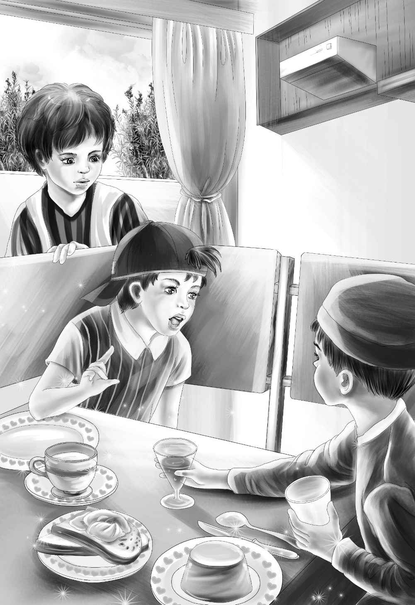

At the Big Table
“咱们坐那张大桌子吧，”亨利建议道，“方便说话。”
“我不想说话，只想吃饭！”迈克嚷道。
“随便你，你不出声，”班尼说，“听我们说就可以了。”
“凭什么？我想说就说。”迈克反驳道。
“那可是你自己的决定，”班尼反唇相讥，“是你亲口说不想讲话的。”
“我只说过我饿了。”迈克说。
“哦，迈克，住口吧！”伍德太太叫道，“尽说些没用的。你难道忘了自己已经无家可归了吗？”
“这场火起得真蹊跷！”杰西说，“快告诉我，你们是怎么知道起火了的？”
“多亏了咱家的小狗！”伍德太太答道，“花花和往常一样，睡在地下室里，昨晚它叫个不停，我意识到准是出事儿了，就赶紧跑下去看，发现四面墙都着火了，所以立刻把小狗放了出去，然后叫醒了迈克和帕特。”
“我不是你叫醒的，”迈克说，“当时我已经醒了。”
“是，儿子，当时你确实是醒着的，”迈克的母亲点点头，“我得承认，那时候你正准备到地下室去牵小狗呢！”
“花花是我最心爱的宝贝！”迈克说，“它又不会自己开门出去，我当然要去救它。”
“对了，小狗去哪儿了？”卡特先生问。
“它被拴在蓝房子里，”帕特说，“它现在见人就狂叫，有些碍事儿。”
“对，我们也把望望和公主留在农场了，”杰西说，“小狗不能呆在有火的地方。”
“房子四面同时起火，确实很蹊跷。”卡特先生沉吟道。
“我在想，是不是有人故意放的火。”亨利说。
“哦，怎么可能！”伍德太太失声叫了出来，“怎么会有人想放火烧掉我们的房子？”
“伍德太太，您今后有什么打算？”卡特先生问。
“我不知道，真的。”她答道，“今晚就先到我的好邻居史密斯太太家的蓝房子里对付一下吧！”
早餐端了上来，八个饥肠辘辘的人开始埋头大吃火腿鸡蛋、吐司、小麦粥和牛奶。餐厅里顿时安静了下来。这时，孩子们听到了一个男人的说话声：“我听说大火是那家的小男孩放的，他纯粹是为了好玩。”

迈克闻言立刻蹦了起来，飞快地跑向说话的人。“我没放火，”他喊道，“是谁说我放的火？”
很快，四个孩子都聚集在迈克身后。
“迈克绝对不会做这种事情！”班尼大声叫道，“绝对不会！谣言是谁传出来的？”
男人大吃一惊，尴尬地笑了笑，“别激动啊，小弟弟。”
“别激动？”迈克声嘶力竭地叫道，“我都被你们诬陷成这样了！”
“不是我说的，”那人辩解道，“我也是听别人讲的。”
亨利开口了：“你能告诉我们，谁是始作俑者吗？这个谣言对迈克来说太恶毒了。”
“好了，好了，”那人说，“看来你们很为朋友打抱不平嘛！”
“那是当然。”亨利正色道。
杰西说：“没错，迈克确实贪玩，也经常调皮捣蛋，但他绝不会烧自家的房子。”
班尼径直走到男人面前：“更何况，迈克怎么会到地下室去放火呢？他的宝贝小狗就在地下室。”
“是啊，他的宝贝小狗就在地下室。”那人重复了一遍，“这是问题的关键。我相信你们了。”
“那么，谣言是谁告诉你的？”迈克又问了一遍，他的声音已经平静了下来。
“我也不认识他。”那人说，“那是个陌生人，当时紧挨着我，站在看火灾的人群中。我只记得他戴着一顶蓝帽子。”
“如果我碰到这个戴蓝帽子的人，”班尼说，“一定要好好问问他。”
那人注视着眼前的几个孩子，说：“迈克，我也希望能像你一样，拥有这么多好朋友。”接着他又看了看班尼，“这是一位不可多得的好友。”
“他并不要总是站在我这边的。”迈克说。
“是‘不’，不是‘不要’！”班尼纠正道。
“好了，班尼！”迈克叫道，“不要再给我挑刺了！”
“迈克就是这样，”杰西说，“他总想争个赢，但他决不至于放火。好了，小家伙们，快回去继续吃早饭吧！”
孩子们回到座位上。刚才的一幕，卡特先生坐在那里全都看在眼里了。“做得好，杰西！”他说，“是场好戏，我为你们感到骄傲。”
“可你为什么不过来帮我们呢？”班尼问道。
“你们并不需要我帮啊！”卡特先生笑着说，“你们处理得比我还好。而且那人有眼力劲儿，知道我是和你们一起的，如果你们有需要，我肯定会出手。”
迈克继续狼吞虎咽。
“我总算又有胃口了。”他咕哝道。
“你本来胃口就超好！”亨利笑了起来。
“迈克，我喜欢你和我们在一起，”维莉笑着说，“要不是你在旁边，我都吃不下早饭了。”
“是实话，”亨利说，“要不她真的吃不下。”
“从现在开始，大家都要留意戴蓝帽子的人。”班尼喝完最后一口牛奶说道。
“那人也可能会换帽子的，班尼。”迈克提醒道。
“没错，说不定下次他会戴顶黑帽子，或者干脆不戴帽子。”
“我也会留意的，”卡特先生说，“你们放心好了。”